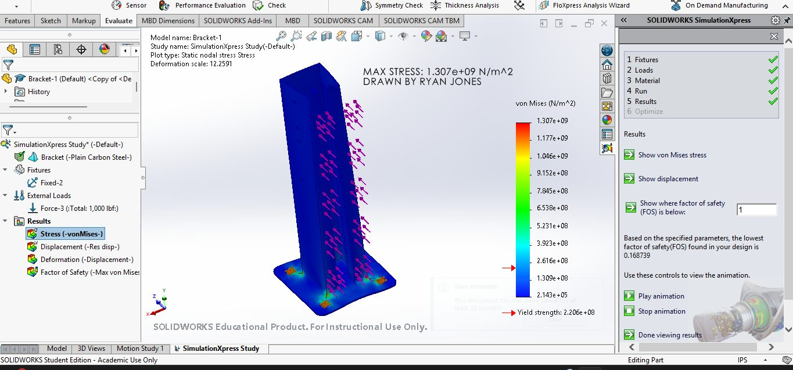
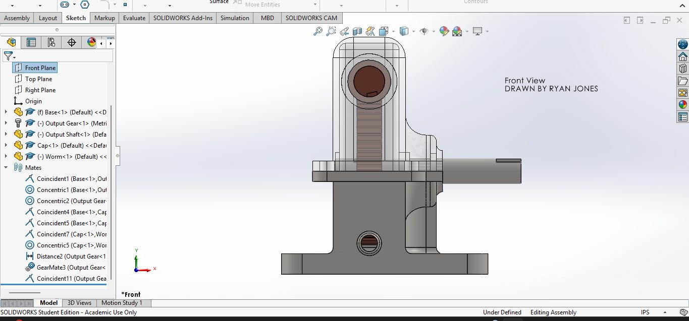
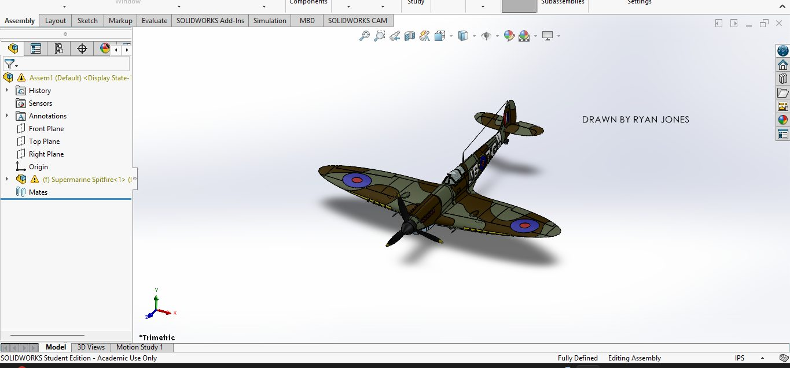
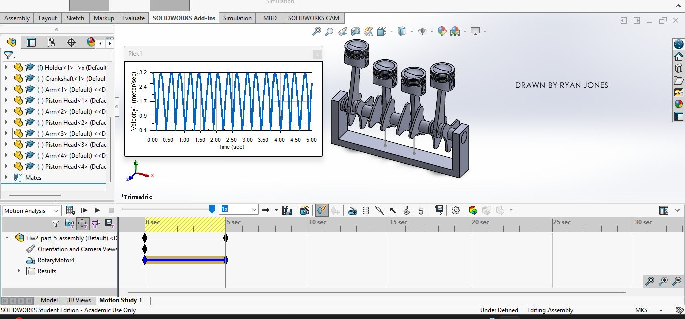
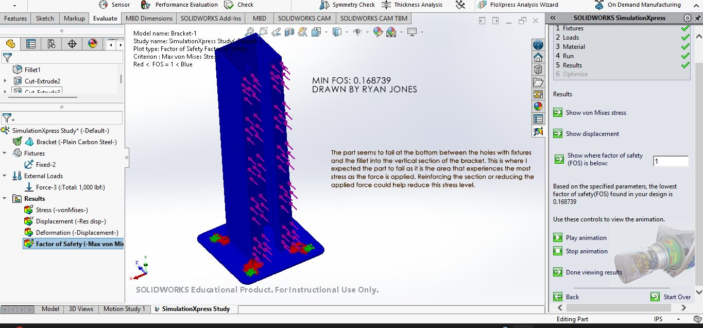
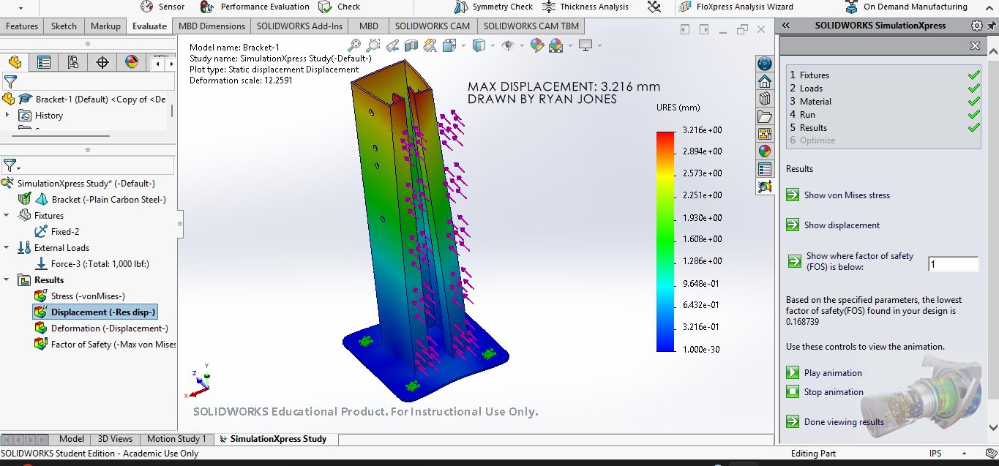
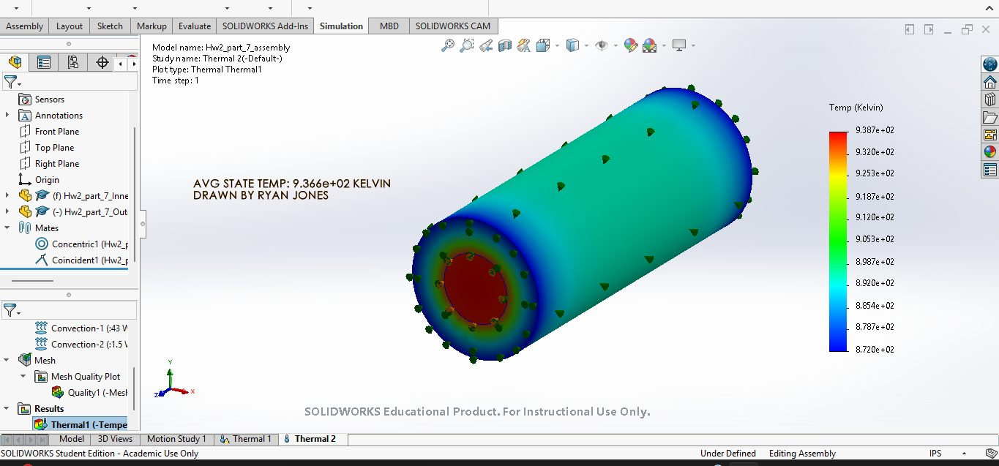
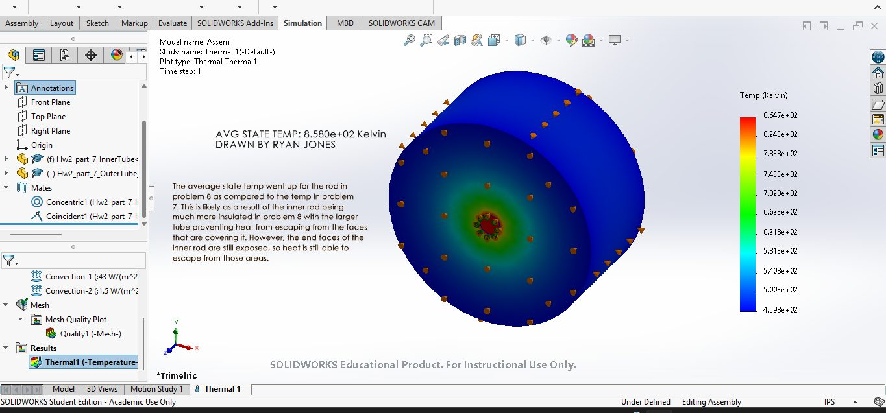

Mechanical Components FEA & Simulation
A set of SolidWorks assignments covering part and assembly modeling, a kinematic motion study, structural finite element analysis, and steady-state thermal analysis.
- Course
- MAE 1351 Intro to Engineering Design, UT Arlington
- Tools
- SolidWorks: modeling, assemblies, Motion Study, Simulation (static and thermal)
- Key result
- Bracket minimum factor of safety 0.169 → redesign needed

Modeling and assemblies
Parts and assemblies built in SolidWorks, including a multi-configuration assembly, a worm-gear gearbox, and an aircraft model.


4-cylinder engine motion study
A motion study of a 4-cylinder engine assembly, used to plot velocity against time.

Bracket FEA
I ran a static study on a plain carbon steel bracket with a fixed base and a 1,000 lbf load to find von Mises stress, displacement, and the points most likely to fail.
| Result | Value |
|---|---|
| Max von Mises stress | 1.307 × 10⁹ N/m² (about 1,307 MPa) |
| Yield strength (plain carbon steel) | 2.206 × 10⁸ N/m² (about 221 MPa) |
| Minimum factor of safety | 0.169 |
| Max displacement | 3.216 mm |
A factor of safety below 1 means the part is expected to fail. The study shows the failure at the bottom of the bracket between the fixtures’ holes and at the fillet where the vertical section meets the base, which is where the load puts the most stress. Reinforcing that section, or enlarging the fillet, would reduce the stress there.


Steady-state thermal analysis
Two thermal studies of a rod inside surrounding tubes, with convection on the exposed surfaces. In the second case the larger tube covers the rod’s end faces, so less heat escapes from them and the inner rod runs warmer, which shows how much geometry and insulation change the temperature distribution.

